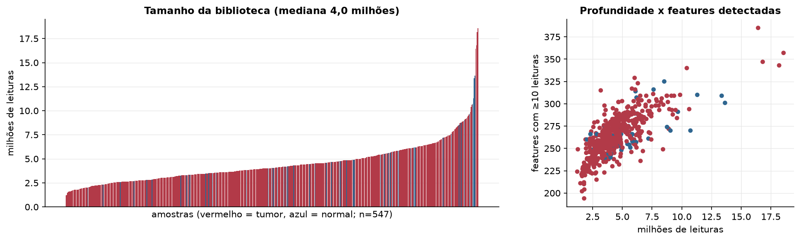
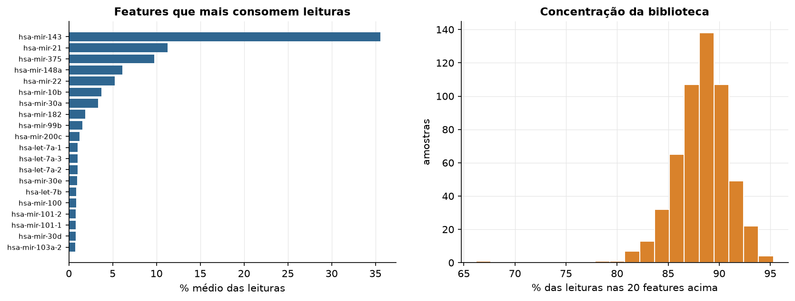
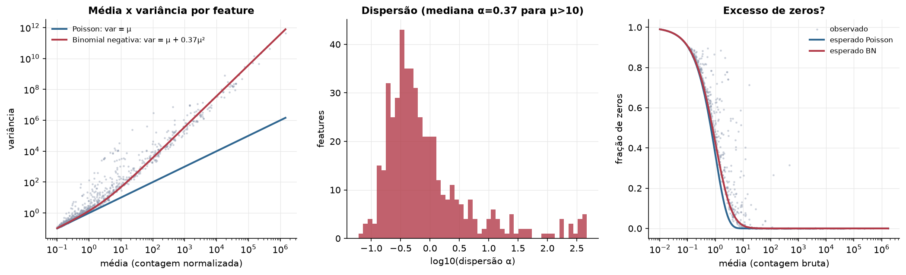
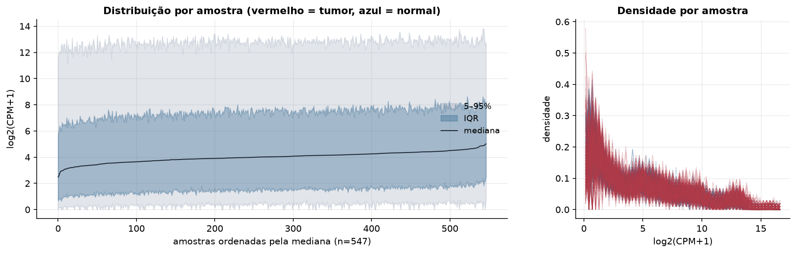
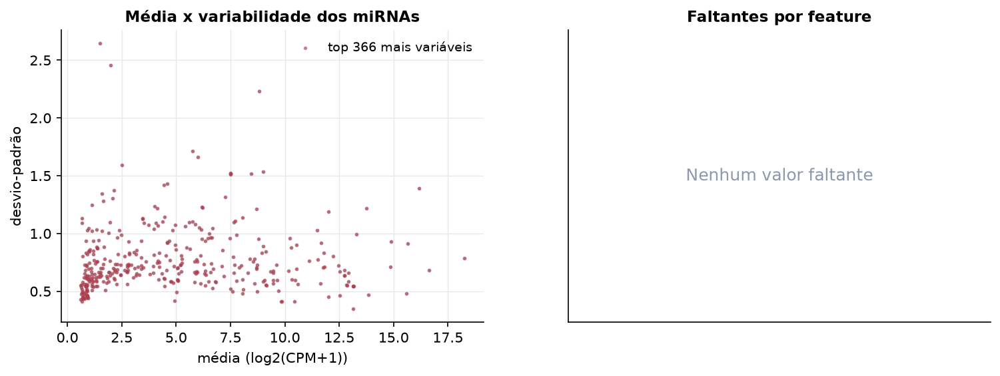
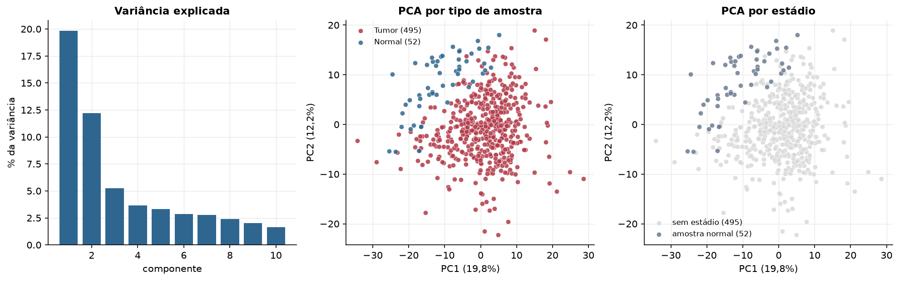
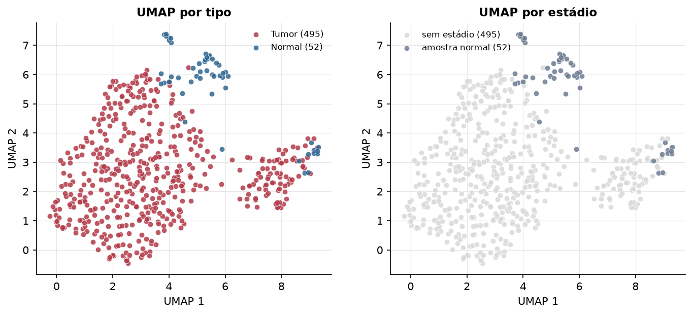
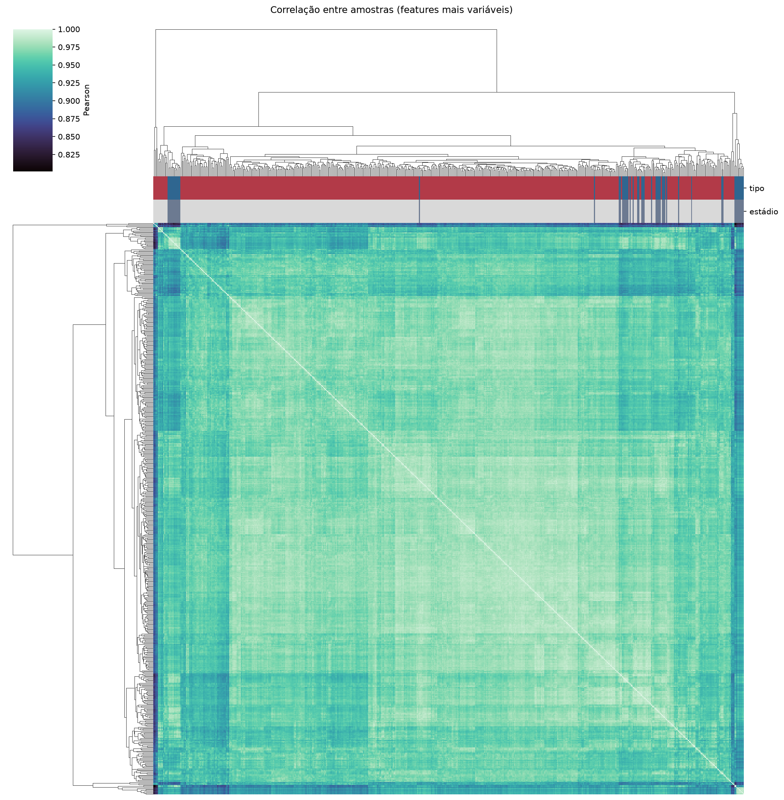
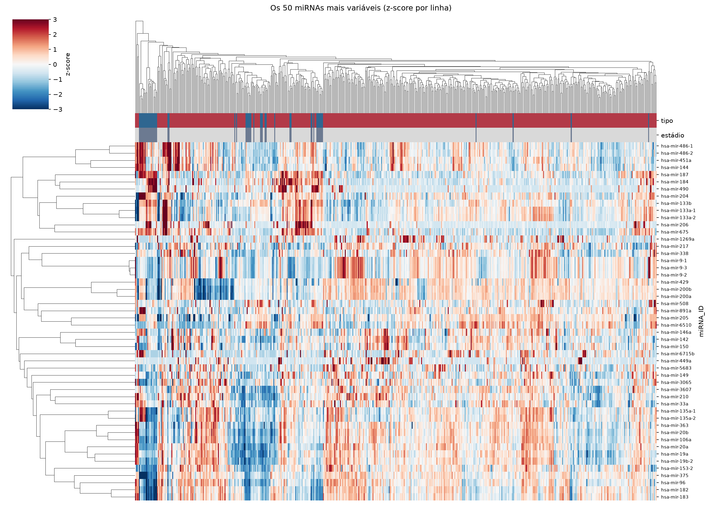
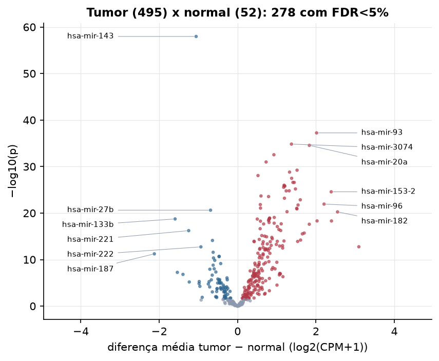

PRAD · miRNA-seq: contagens brutas (GDC)
BCGSC miRNA Profiling (miRBase v21) · gerado em 22/10/2026 03:08
4,0 Mtamanho mediano
0,37dispersão mediana α
366miRNAs
495amostras tumorais
52amostras normais
0,0%valores faltantes
Fonte: API do GDC (BCGSC miRNA Profiling)
Principais resultados
- Bibliotecas de 1,2 a 18,6 milhões de leituras (mediana 4,0). 810 de 1.881 features têm leitura em pelo menos 10% das amostras.
- A variância cresce bem acima da média: a dispersão mediana da binomial negativa é α=0.37 (para features com média > 10). Isso descarta um modelo Poisson e indica binomial negativa (ou Poisson-lognormal) na verossimilhança.
- A fração de zeros é compatível com a binomial negativa (diferença mediana -0,3%); inflação de zeros não parece necessária.
- Em média 88,5% das leituras de cada amostra vão para as 20 features mais abundantes.
- 366 miRNAs medidos em 547 amostras (495 tumorais e 52 normais); 0,0% dos valores estão faltando.
- Os dois primeiros componentes principais explicam 19,8% e 12,2% da variância das features mais variáveis.
- Correlação mediana entre amostras: 0,97.
- Amostras com correlação muito abaixo das demais (possíveis outliers técnicos): TCGA-EJ-7783-11, TCGA-EJ-7123-11, TCGA-FC-A4JI-01, TCGA-HC-7740-11, TCGA-HC-7211-11, TCGA-HC-8258-11, TCGA-HC-7747-11, TCGA-M7-A71Z-01, TCGA-M7-A724-01, TCGA-V1-A9O5-06.
- Tumor x normal: 278 miRNAs diferentes com FDR < 5% (204 maiores no tumor, 74 maiores no normal; 52 pacientes têm o par tumor-normal).
- Mais aumentados no tumor: hsa-mir-93, hsa-mir-3074, hsa-mir-20a, hsa-mir-615, hsa-mir-3651, hsa-mir-92a-1, hsa-mir-17, hsa-mir-1291.
- Mais reduzidos no tumor: hsa-mir-143, hsa-mir-27b, hsa-mir-133b, hsa-mir-221, hsa-mir-152, hsa-mir-222, hsa-mir-379, hsa-mir-187.
- Associações clínicas com p < 0,05 nos componentes principais: PC2 com idade (p=0.046).
Biblioteca


Sobredispersão e zeros

Exploração em log2(CPM+1)
Features com CPM ≥ 1 em pelo menos 20% das amostras (366 features).
Distribuição dos valores


Estrutura das amostras




Tumor x normal

Features mais diferentes entre tumor e normal
| miRNA_ID | diferenca_tumor_menos_normal | t | p | fdr |
|---|---|---|---|---|
| hsa-mir-143 | -1.058 | -22.827 | 1.06e-58 | 3.9e-56 |
| hsa-mir-93 | 2.016 | 23.586 | 5.76e-38 | 1.05e-35 |
| hsa-mir-3074 | 1.375 | 18.793 | 1.48e-35 | 1.8e-33 |
| hsa-mir-20a | 1.831 | 20.419 | 2.74e-35 | 2.5e-33 |
| hsa-mir-615 | 0.926 | 15.837 | 2.9e-33 | 2.12e-31 |
| hsa-mir-3651 | 0.727 | 13.991 | 1.03e-31 | 6.28e-30 |
| hsa-mir-92a-1 | 1.518 | 19.047 | 5.98e-30 | 3.13e-28 |
| hsa-mir-17 | 1.326 | 17.749 | 1.55e-29 | 7.08e-28 |
| hsa-mir-1291 | 0.521 | 13.857 | 8.54e-29 | 3.47e-27 |
| hsa-mir-92a-2 | 1.379 | 17.986 | 3.32e-28 | 1.22e-26 |
| hsa-mir-3653 | 1.412 | 15.786 | 2.54e-27 | 7.94e-26 |
| hsa-mir-500a | 1.446 | 17.174 | 2.6e-27 | 7.94e-26 |
| hsa-mir-103a-2 | 1.186 | 17.529 | 1.03e-26 | 2.9e-25 |
| hsa-mir-103a-1 | 1.192 | 17.473 | 1.39e-26 | 3.64e-25 |
| hsa-mir-342 | 1.206 | 16.59 | 1.6e-26 | 3.9e-25 |
| hsa-mir-5586 | 1.176 | 15.968 | 2.85e-26 | 6.52e-25 |
| hsa-mir-25 | 1.477 | 17.645 | 6.47e-26 | 1.39e-24 |
| hsa-mir-7-1 | 1.317 | 15.924 | 1.63e-25 | 3.25e-24 |
| hsa-mir-423 | 1.24 | 16.752 | 1.69e-25 | 3.25e-24 |
| hsa-mir-153-2 | 2.389 | 16.125 | 2.66e-25 | 4.87e-24 |
| hsa-mir-4668 | 0.597 | 13.344 | 2.1e-24 | 3.66e-23 |
| hsa-mir-592 | 0.791 | 11.853 | 2.8e-24 | 4.65e-23 |
| hsa-mir-153-1 | 1.196 | 14.389 | 6.39e-24 | 1.02e-22 |
| hsa-mir-708 | 1.6 | 15.437 | 1.41e-23 | 2.15e-22 |
| hsa-mir-96 | 2.206 | 15.364 | 1.17e-22 | 1.72e-21 |
| hsa-mir-5706 | 0.58 | 12.006 | 1.5e-22 | 2.11e-21 |
| hsa-mir-19b-2 | 1.543 | 14.152 | 1.84e-22 | 2.49e-21 |
| hsa-mir-4449 | 0.585 | 11.013 | 8.6e-22 | 1.12e-20 |
| hsa-mir-425 | 1.509 | 14.089 | 9.36e-22 | 1.18e-20 |
| hsa-mir-19b-1 | 1.514 | 13.73 | 1.27e-21 | 1.55e-20 |
Associação com variáveis clínicas
p-valores da associação dos três primeiros componentes principais (só tumores) com estádio (Kruskal-Wallis), sexo (Mann-Whitney), idade (Spearman) e sobrevida global (Cox univariado).
| estádio (Kruskal) | sexo (Mann-Whitney) | idade (Spearman) | sobrevida OS (Cox) | |
|---|---|---|---|---|
| PC1 (18,4%) | 0.217 | 0.236 | ||
| PC2 (11,0%) | 0.046 | 0.192 | ||
| PC3 (5,6%) | 0.682 | 0.366 |